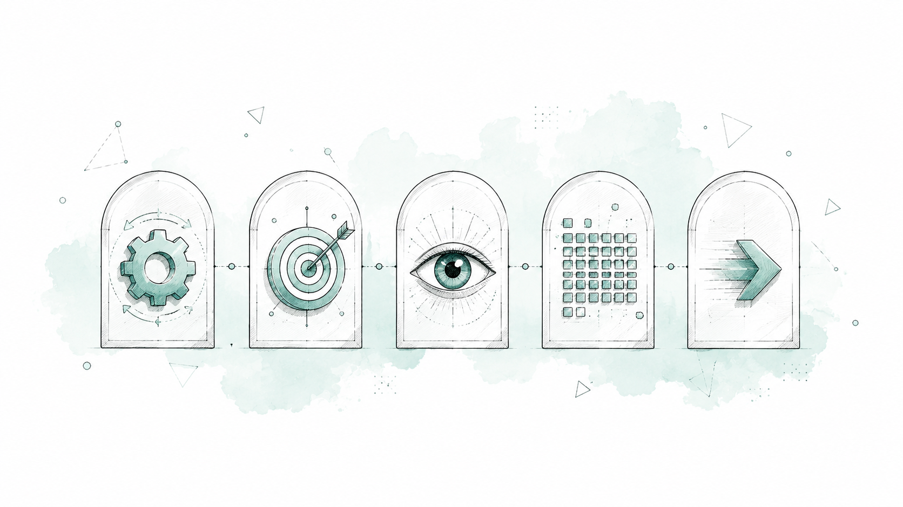
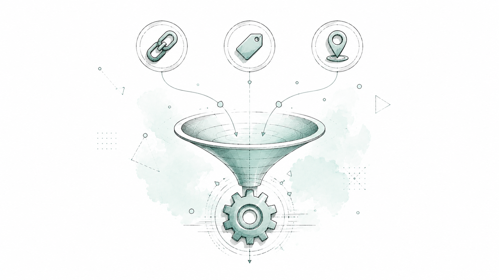
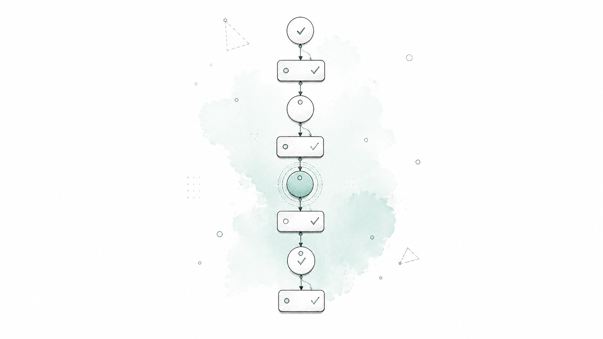
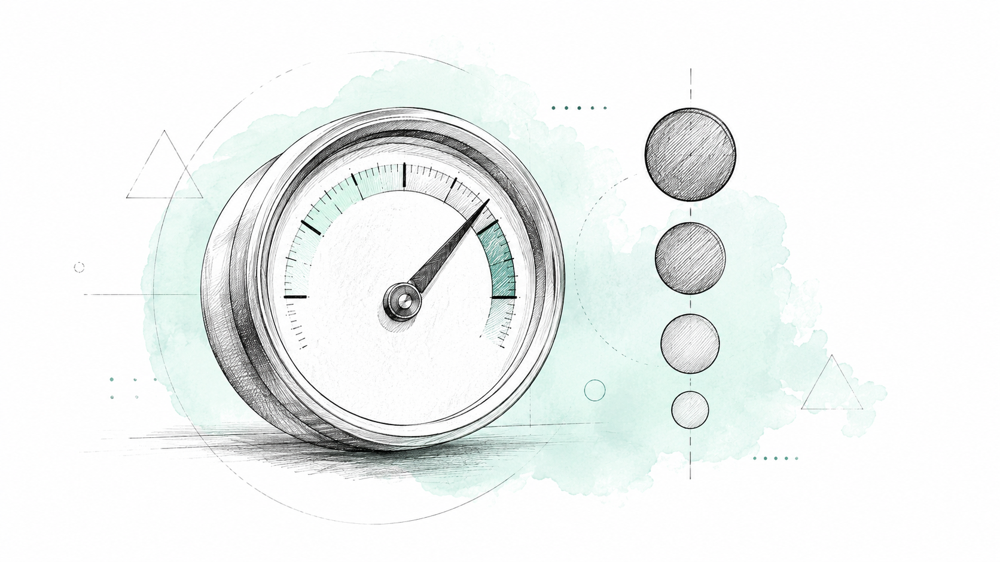
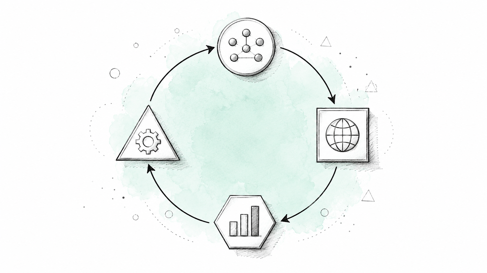

← Articles
Auto SEO Expert: Autonomous AI SEO Agent
Scene 1 of 8
Scene 01 • Introduction
Auto SEO Expert
An autonomous AI agent that audits, scores, and prioritizes a website's SEO health end to end.
"Give the user a clear understanding of how well their website is optimized for search engines, identify what is wrong, prioritize what should be fixed, and provide actionable recommendations — without requiring the user to understand SEO."
- Two implementations, one methodology: ChatGPT GPT and Claude Skill.
- Behaves as a senior SEO expert, not a generic chatbot.
- Independently discovers, crawls, analyzes, scores, and reports.

Scene 02 • Core Philosophy
Five Principles Drive Every Audit
The agent is built to work more than it talks.
- Automatic: do as much as possible without repeatedly asking the user.
- Objective: reports focus on findings, scores, and priorities.
- Visual: the user always sees the analysis progressing.
- Comprehensive: the entire internal website, not only the homepage.
- Actionable: every important problem gets a practical recommendation.
The user needs visibility, not narration.

Scene 03 • Minimal Onboarding
Confirm the Language, Ask Only What's Essential
The first interaction confirms the language, then asks for just two things.
This audit runs in English by default.
Continue in English, or switch language?
Site:
Target region:
- Every subsequent message follows the language the user chooses.
- Only two required inputs: the site and its target region.
- Target keywords are discovered automatically — never requested upfront.
- Optional context (keywords, competitors, Search Console, Analytics) only when it materially improves the analysis.

Scene 04 • The Audit Pipeline
A 22-Stage Pipeline, Fully Visible
The user always knows what's being analyzed, what's done, and what's left.
AUTO SEO ANALYSIS
████████████░░░░░░░░ 60%
✓ Website discovery
✓ robots.txt
✓ Sitemap
✓ Internal crawl
✓ Metadata
→ Analyzing images
- From website discovery and robots.txt to scoring, root cause analysis, and the final report.
- Crawls the entire site recursively — never limited to the homepage or nav menu.
- Excludes external domains from the crawl scope; reports them separately.

Scene 05 • Technical & On-Page SEO
Technical & On-Page Auditing
Every crawled page is inspected — titles, headings, images, links, canonicals, performance.
- robots.txt, sitemap.xml, crawlability, and indexability checked explicitly.
- Titles, meta descriptions, headings, and content evaluated for relevance and duplication.
- Images, internal linking, broken links, and canonical consistency analyzed at scale.
- Performance measured where possible — TTFB, LCP, CLS, INP — never invented.
Scene 06 • AI Search Readiness
Preparing Sites for AI-Powered Search
Beyond Google rankings — clarity for ChatGPT, Claude, Perplexity, and Gemini.
- Evaluates clear entities, structured content, and explicit answers.
- Checks structured data, author and organization information, and factual consistency.
- E-E-A-T signals reviewed as trust indicators, never as a direct ranking score.
This category should not pretend to measure AI search rankings directly — it is an architectural and content quality assessment.
Scene 07 • Scoring & Priorities
A Weighted Score From 0 to 100
Every category is scored, weighted, and translated into a prioritized action plan.
| Category | Weight |
|---|---|
| Technical SEO | 20% |
| Crawlability & Indexability | 15% |
| On-Page SEO | 15% |
| Content Quality | 15% |
| Internal Linking / Performance | 10% each |
| Image SEO / Structured Data | 5% each |
| Local SEO / AI Search Readiness | 3% / 2% |
- Findings are ranked Critical, High, Medium, Low, and Opportunity — never dumped without priority.

Scene 08 • The Bigger Picture
Less Conversation. More SEO Intelligence.
From manual audits to a continuous, autonomous optimization loop.
The agent should operate as a senior SEO professional who can independently inspect a website, understand its architecture, identify problems, quantify SEO health, prioritize the work, and present the result clearly.
- Where is this website today? What's holding it back? What should be fixed first?
- Read → Analyze → Score → Prioritize → Report — never modify, delete, or publish without explicit authorization.
